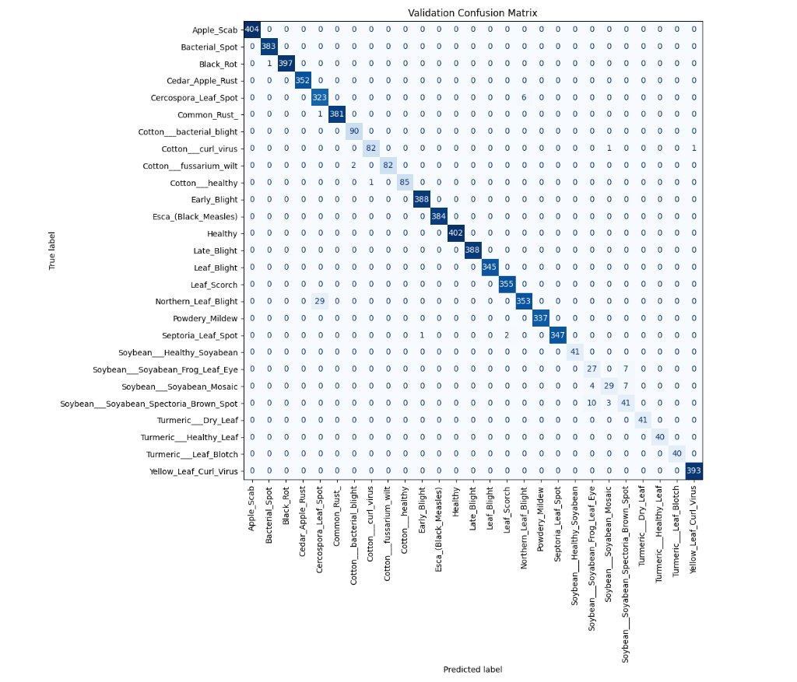

Instant, CPU-first disease identification & verified cultural guidance for smallholder farmers
A robust, resilient flow designed for real-world rural connectivity limitations
localStorage; zero server storage footprints.
Honest, measured metrics and deep domain insights from 6,842 test evaluations

| Metric | Measured Value |
|---|---|
| Laboratory Top-1 Accuracy | 98.85% (6,763 / 6,842) |
| Top-3 Differential Accuracy | 100.00% (6,842 / 6,842) |
| Macro F1 Score | 0.9669 (across 27 classes) |
| PyTorch vs ONNX Parity | 4.53e-06 (max logit delta) |
| Serving CPU Latency | 18.25 ms (Mean, single core) |
| Model Binary Footprint | 16.43 MB (Quantized ONNX) |
Built for practical deployment by state cooperatives, KVKs, and smallholders